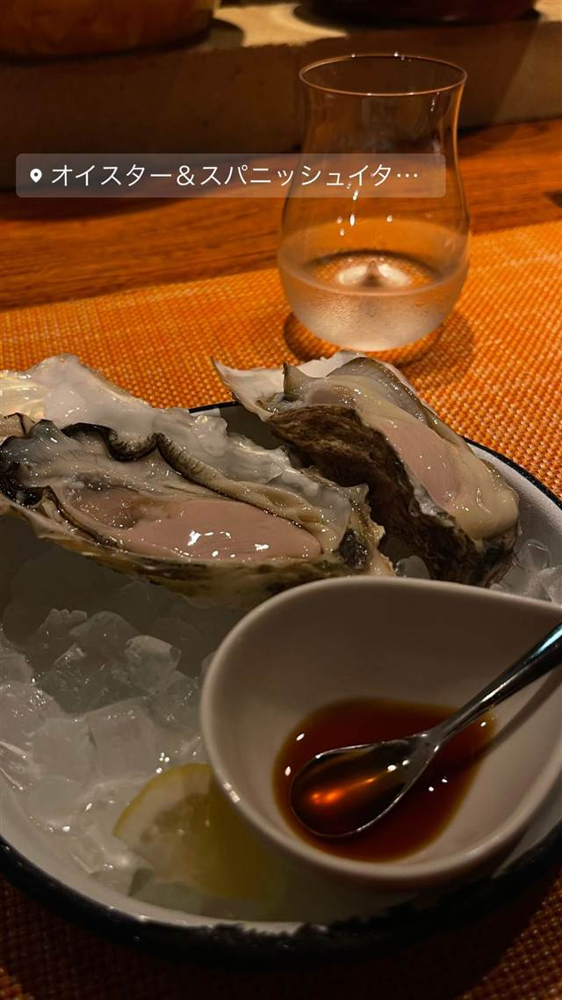

オイスター＆スパニッシュイタリアンバル スパイラル
国産牡蠣を常時8種類以上、1個400円から味わえる
オイスター＆スパニッシュイタ…
神泉駅から徒歩2分、2013年開業の「スパイラル」は牡蠣とスペイン・イタリア料理を楽しめるオイスターバー。全国各地から届く国産牡蠣を常時8種類以上そろえ、生牡蠣なら1個400円から味わえる。
TRIVIA
豆知識
- 全国各地の国産牡蠣を常時8種類以上、1個400円から食べ比べできる
REVIEWS
世間の評判
3.48食べログ
生牡蠣の食べ比べと半額デー
- 産地ごとの生牡蠣の味わいの違いを食べ比べられるという声が多い
- 半額キャンペーンでお得に楽しめるという声が多い
- シックで落ち着いた大人の隠れ家的な雰囲気を評価する声が多い
- 人気店でいつも混んでいて満席になりやすいという声がある
食べログ 口コミ992件
| 創業 | 2013年3月10日開業 |
|---|---|
| 看板 | 全国各地の生牡蠣（1個400円〜）、グリルオイスター、牡蠣のアヒージョ |
| こだわり | 国産にこだわった牡蠣を常時8種類以上用意し、全国各地から取り寄せている。 |
| どこから | 都心 |
| 営業時間 | 月〜日 12:00-23:30 |
| 予算 | 夜 ¥4,000～¥4,999 |
| 場所 | 神泉 東京都渋谷区円山町14-2 福富ビル1F |
| メモ | 神泉駅北口から徒歩2分、渋谷駅から徒歩10分。営業12:00〜24:00（L.O.23:00）、コースは2,310円〜。 |
食べたもの：生牡蠣
ONSEN & SAUNA